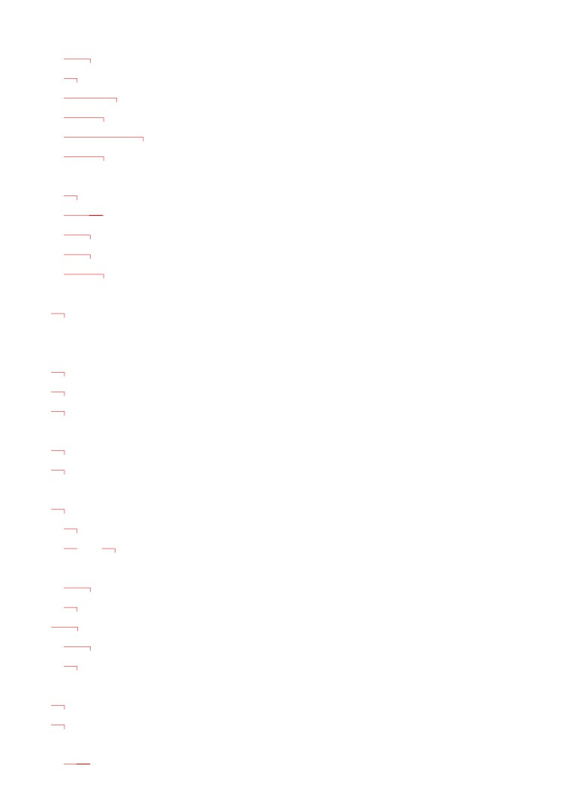
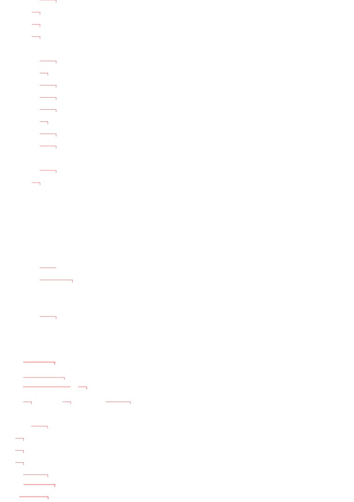
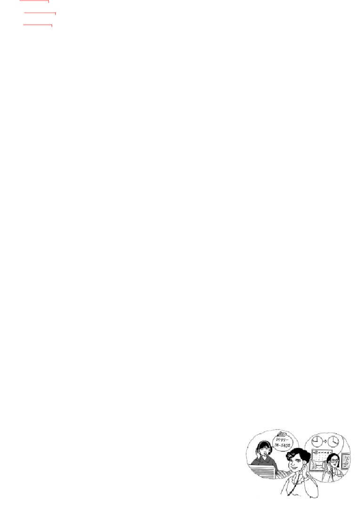
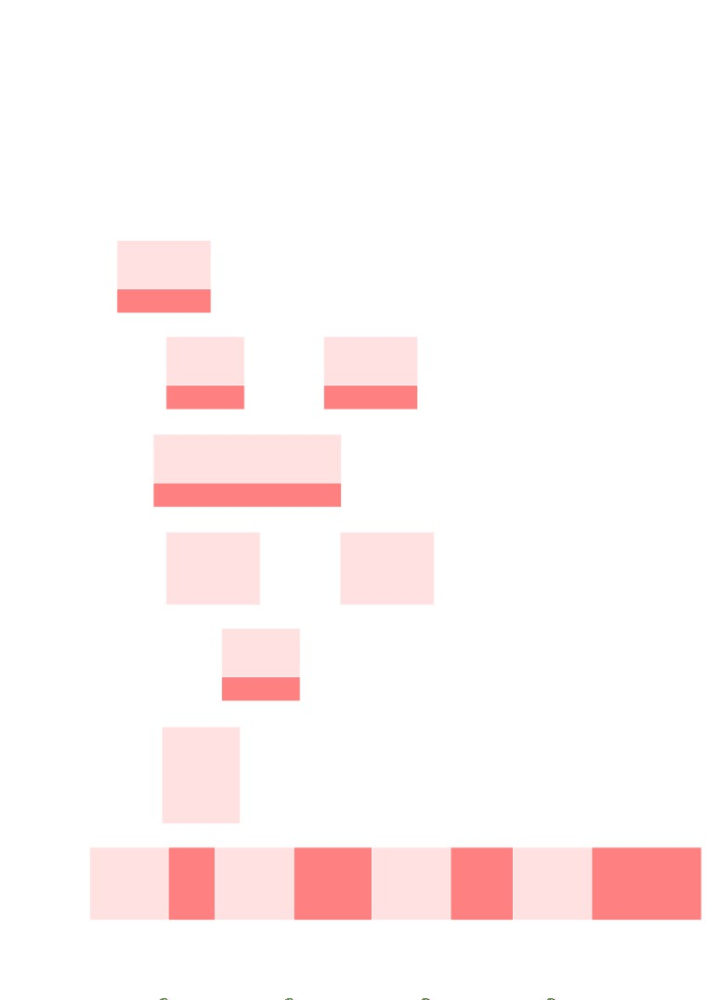
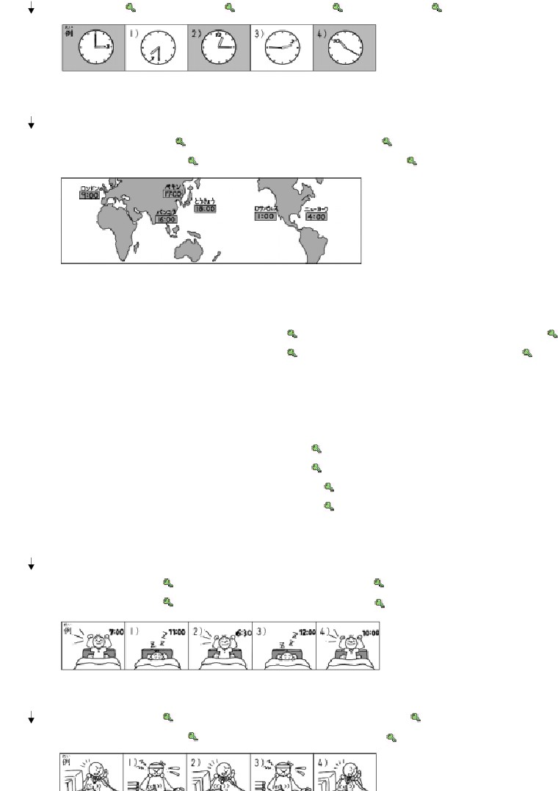
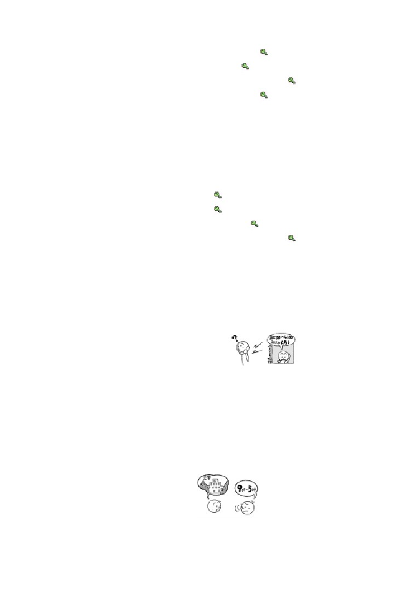
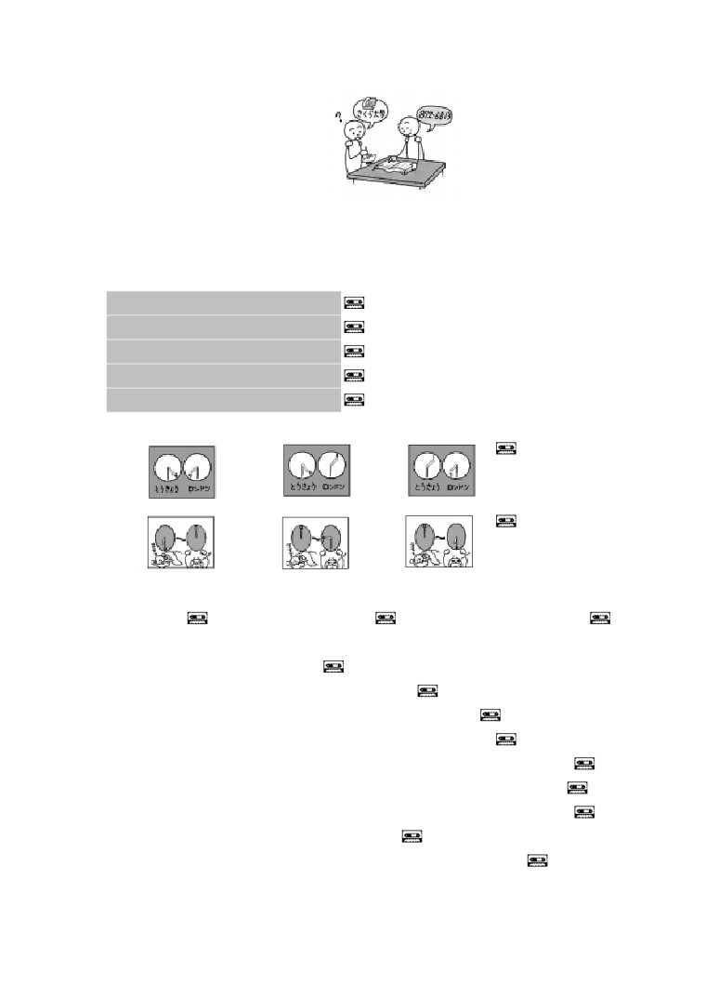
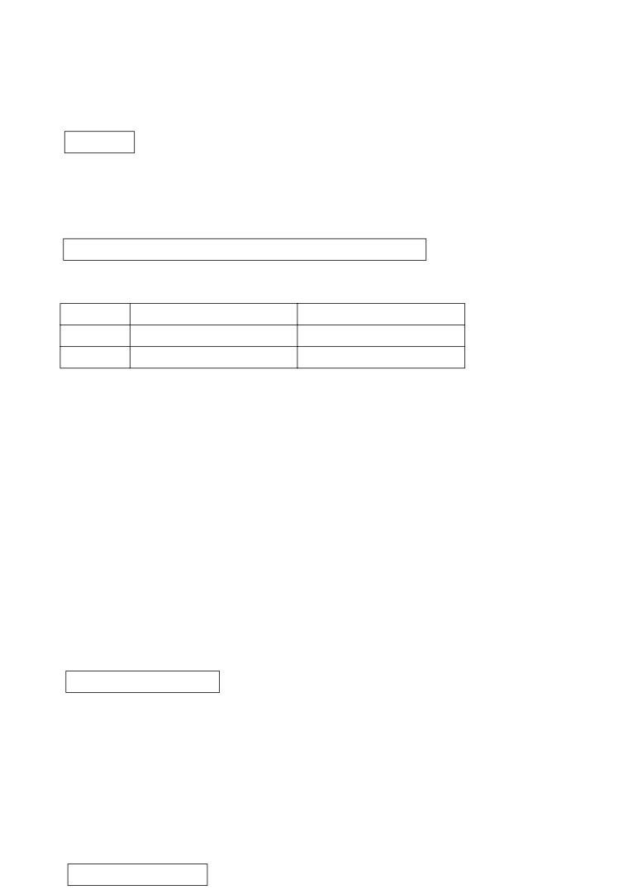
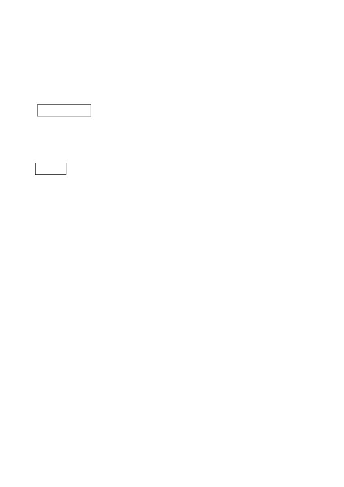

第
４ 課
課:4 (頁:1/10)
ことば
1. おきます
起きます
起床，起來
2. ねます
寝ます
睡覺，就寢
3. はたらきます
働きます
工作
4. やすみます
休みます
休息
5. べんきょうします
勉強します
念書，用功
6. おわります
終わります
結束
7. デパート
百貨公司
8. ぎんこう
銀行
銀行
9. ゆうびんきょく
郵便局
郵局
10. としょかん
図書館
圖書館
11. びじゅつかん
美術館
美術館
12. いま
今
現在
13.
…じ
…時
…點（鐘）
14.
…ふん （ …ぷん ）
…分
…分（鐘）
15. はん
半
半
16. なんじ
何時
幾點
17. なんぷん
何分
幾分
18. ごぜん
午前
上午
19. ごご
午後
下午
20. あさ
朝
早上
21. ひる
昼
白天，中午
22. ばん （ よる ）
晩（ 夜 ）
晚上，夜晚
23. おととい
前天
24. きのう
昨天
25. きょう
今天
26. あした
明天
27. あさって
後天
28. けさ
今天早上
29. こんばん
今晩
今天晚上
30. やすみ
休み
休息，休假

課:4 (頁:2/10)
31.
ひるやすみ
昼休み
午休
32. まいあさ
毎朝
每天早上
33. まいばん
毎晩
每天晚上
34. まいにち
毎日
每天
35. げつようび
月曜日
星期一
36. かようび
火曜日
星期二
37. すいようび
水曜日
星期三
38. もくようび
木曜日
星期四
39. きんようび
金曜日
星期五
40. どようび
土曜日
星期六
41. にちようび
日曜日
星期天
42. なんようび
何曜日
星期幾
43. ばんごう
番号
號碼
44. なんばん
何番
幾號
45.
～から
從～
46.
～まで
到～
47.
～と～
和（用於連接名詞）
48. そちら
貴，你們
49. たいへんですね。
大変ですね。
夠嗆。/不得了。（表示同情和慰問對
方的心情）
50. え―と
嗯，我看看
かい わ
■会話
104
電話查號台
ねが
お願いします。
麻煩你（請對方幫忙時）。
かしこまりました。
我明白了，遵命。
と
あ
ばん ごう
お問い合わせの 番号
您查詢的號碼
［どうも］ありがとう ございました。
非常謝謝您。
---以下單字請自行練習發音---
ニューヨーク
紐約
ぺキン
北京
ロンドン
倫敦
バンコク
曼谷
ロサンゼルス
洛杉磯
び じゅつ かん
やまと美術館
大和美術館（虛構的美術館名）

おお さか
課:4 (頁:3/10)
大阪デパート
大阪百貨公司（虛構的進百貨公司名
と しょ かん
みどり図書館
綠意圖書館（虛構的圖書館名）
ぎん こう
アップル銀行
蘋果銀行（虛構的銀行）
ぶん けい
文型
いま
じ ふん
1. 今
4時5分です。
じ
じ
はたら
2. わたしは
9時から 5時まで 働きます。
あさ
じ
お
3. わたしは 朝
6時に 起きます。
べん きょう
4. わたしは きのう 勉強しました。
れい ぶん
例文
いま なん じ
1. 今 何時ですか。
じ
ぷん
…2時10分です。
いま
なん じ
ニューヨークは 今 何時ですか。
ご ぜん
じ
ぷん
…午前 0時10分です。
ぎん こう
なん じ
なん じ
2. 銀行は 何時から 何時までですか。
じ
じ
…9時から 3時までです。
やす
なん よう び
休みは 何曜日ですか。
ど よう び
にち よう び
…土曜日と 日曜日です。
まい ばん
なん じ
ね
3. 毎晩 何時に 寝ますか。
じ
ね
…11時に 寝ます。
ど よう び はたら
4. 土曜日 働きますか。
はたら
…いいえ、働きません。
べんきょう
5. きのう 勉強しましたか。
べん きょう
…いいえ、勉強しませんでした。
でん わ ばん ごう
なん ばん
6. IMCの 電話番号は 何番ですか。
…341の
2597です。
かい わ
会話
なん じ
そちらは 何時から 何時までですか なん じ
ばん ごう あん ない
いし だ
番号案内
：
はい、104の 石田です。
び じゅつ かん
でん わ ばん ごう
ねが
カリナ
： やまと美術館の 電話番号を お願いします。
ばん ごう あん ない
び じゅつかん
番号案内
：
やまと美術館ですね。 かしこまりました。
----------------------------
と
あ
ばん ごう
テープ
： お問い合わせの 番号は 0797の 38の 5432です。

課:4 (頁:4/10)
----------------------------
び じゅつ かん
ひと
び じゅつ かん
美術館の 人：
はい、やまと美術館です。
なん じ
なん じ
カリナ
： すみません。 そちらは 何時から 何時までですか。
び じゅつ かん
ひと
じ
じ
美術館の 人：
9時から 4時までです。
やす
なん よう び
カリナ
： 休みは 何曜日ですか。
び じゅつ かん
ひと
げつ よう び
美術館の 人：
月曜日です。
カリナ
： どうも ありがとう ございました。
れん しゅう
練習 Ａ
いま
1. 今
4じ５ふん
です。
9じはん
なんじ
……か
ひる やす
2. 昼休みは
12じ
から
1じ
までです。
12じはん
1じ15ふん
なんじ
なんじ
…………か。
やす
3. 休みは
すいようび
です。
どようびと にちようび
なんようび
……か。
はたら
4. わたしは
9じ
から
5じ
まで 働きます。
あさ
ばん
げつようび
きんようび
まい あさ
お
5. わたしは 毎朝
6じ
に 起きます。
7じはん
あなたは ……
なんじ
………………か。
べんきょう
6. わたしは
まいにち
勉強します。
あした
べんきょう
きのう
勉強しました。
おととい
7.
ね
ます
ね
ません
ね
ました
ね
ませんでした
やすみ
ます
やすみ
ません
やすみ
ました
やすみ
ませんでした
はたらき
ます
はたらき
ません
はたらき
ました
はたらき
ませんでした
れん しゅう
練習 Ｂ
れい
じ
1.
例： →
3時です。

課:4 (頁:5/10)
1)
→
2)
→
3)
→
4)
→
れい
とうきょう
とうきょう
いま
なん じ
2.
例： 東京 →
東京は 今 何時ですか。
ご ご
じ
……午後 6時です。
1)
ぺキン →
2) バンコク
→
3)
ロンドン →
4) ロサンゼルス →
れい
ぎん こう
ぎん こう
なん じ
なん じ
3.
例： 銀行 （ 9:00～3:00 ）
→
銀行は 何時から 何時までですか。
じ
じ
……9時から 3時までです。
ゆう びん きょく
1)
郵便局 （ 9:00～5:00 ）
→
2)
デパート （ 10:30～7:30 ） →
と しょ かん
かい しゃ
3)
図書館 （ 9:00～6:30 ）
→
4)
会社 （ 9:15～5:45 ）
→
れい
まい ばん
べん きょう
4. 例： 毎晩・勉強します（ 7:30～9:30 ）
まい ばん
なん じ
なん じ
べん きょう
→ 毎晩 何時から 何時まで 勉強しますか。
じ はん
じ はん
べん きょう
……7時半から 9時半まで 勉強します。
まい にち はたら
1)
毎日・働きます（ 9:30～5:30 ） →
ひる やす
2)
昼・休みます（ 12:00～1:00 ） →
ど よう び はたら
3)
土曜日・働きます（ 9:00～2:00 ） →
まい あさ
べん きょう
4)
毎朝・勉強します（ 7:00～8:00 ） →
れい
まい あさ
まい あさ
なん じ
お
5.
例： 毎朝 →
毎朝 何時に 起きますか。
じ
お
……7時に 起きます。
まい ばん
1)
毎晩 →
2)
あした →
こん ばん
にち よう び
3)
今晩 →
4)
日曜日 →
れい
はたら
6.
例： あした →
あした 働きます。
まい にち
ばん
1)
毎日 →
2)
きのうの 晩 →
3)
あさって →
4)
おととい →

れい
べんきょう
べんきょう
課:4 (頁:6/10)
7.
例1： きょう 勉強しますか。（ はい ） →
はい、勉強します。
れい
べんきょう
例2： きのう 勉強しましたか。（ いいえ ）
べんきょう
→ いいえ、勉強しませんでした。
はたら
1)
あさって 働きますか。（ いいえ ） →
まい ばん
べん きょう
2)
毎晩 勉強しますか。（ はい ） →
ばん べんきょう
3)
きのうの 晩 勉強しましたか。（ はい ） →
はたら
4)
きのう 働きましたか。（ いいえ ） →
れい
まい あさ
お
まい あさ
なん じ
お
8.
例1： 毎朝・起きます（ 6:00 ) →
毎朝 何時に 起きますか。
じ
お
……6時に 起きます。
れい
はたら
例2： きのう・働きます（ 9:00～5:00 )
なん じ
なん じ
はたら
→ きのう 何時から 何時まで 働きましたか。
じ
じ
はたら
……9時から 5時まで 働きました。
まい ばん
ね
1)
毎晩・寝ます（ 11:00 )
→
お
2)
けさ・起きます（ 7:30 )
→
まい にち はたら
3)
毎日・働きます ( 10:00～6:00 )
→
ばん べんきょう
4)
きのうの 晩・勉強します ( 7:00～8:30 )
→
れん しゅう
練習 Ｃ
び じゅつ かん
1. Ａ: はい、やまと美術館です。
なん じ
なん じ
Ｂ: すみません。 そちらは 何時から 何時までですか。
じ
じ
Ａ:
10時から 4時までです。
やす
なん よう び
Ｂ: 休みは 何曜日ですか。
げつ よう び
Ａ: 月曜日です。
おお さか
1)
大阪デパート
じ はん
じ はん
か よう び
10時半・7時半 火曜日
と しょ かん
2)
みどり図書館
じ
じ
もく よう び
9時・6時
木曜日
ぎん こう
3)
アップル銀行
じ
じ
ど よう び
にち よう び
9時・3時
土曜日と 日曜日
だい がく
なん じ
2. Ａ:
大学は 何時からですか。
じ
Ｂ:
9時からです。
なん じ
お
Ａ: 何時に 終わりますか。
じ
お
Ｂ:
5時に 終わります。
まい にち
Ａ: 毎日ですか。
Ｂ: はい。
たい へん
Ａ: 大変ですね。
じ
じ はん
1)
10時
6時半
じ はん
じ
2)
8時半
4時
じ はん
じ
3)
9時半
8時

だい がく
でん わ ばん ごう
なん ばん
課:4 (頁:7/10)
3. Ａ:
すみません。 さくら大学の 電話番号は 何番ですか。
Ｂ: え―と、872の
6813です。
Ａ:
872の
6813ですね。 どうも。
おお さか
1)
大阪デパート
433-1887
2)
IMC
287-4949
と しょ かん
3)
みどり図書館
06-673-1901
もん だい
問題
れい
じ
1.
1)
…例： 10時です。
れい
じ
じ
2)
…例： 9時から3時までです。
れい
じ
お
3)
…例： 6時に起きます。
れい
べんきょう
4)
…例： はい、勉強しました。
れい
5)
…例： 0790の31の1887です。
2.
1)
①
②
③
2)
①
②
③
3.
1) （ × ）
2) （ ○ ）
3) （ × ）
れい
いま じ はん
4. 例： 今9時半です。（ 9：30 ）
じ はん
お
1)
けさ７時半に起きました。（ 7：30 ）
かい しゃ
あさ
じ
ぷん
ご ぜん
2)
会社は朝８時20分からです。（ 午前 8：20 ）
まい にち じ
じ
はたら
3)
毎日9時から6時まで働きます。（ 9：00～6：00 ）
ひる やす
じ
ふん
じ
ふん
4)
昼休みは12時15分から1時15分までです。（ 12：15～1：15 ）
た なか
でん わ ばん ごう
5)
田中さんのうちの電話番号は349の7865です。（ 349-7865 ）
び じゅつ かん
でん わ ばん ごう
6)
美術館の電話番号は075の831の6697です。（ 075-831-6697 ）
ほん
えん
7)
この本は3,650円です。（ 3,650 ）
えん
8)
あのコンピューターは208,000円です。（ 208,000 ）
れい
とけい
5. 例1： これは スイス（ の ）時計です。
れい
でん わ
例2： 電話は どこ（ × ）ですか。
まい あさ
じ
お
1)
毎朝（ × ） 6時（ に ）起きます。
び じゅつ かん
なん じ
なん じ
2)
美術館は 何時（ から ）何時（ まで ）ですか。
いま なん じ
課:4 (頁:8/10)
3)
今 何時（ × ）ですか。
もく よう び
ご ご
びょう いん
やす
4)
木曜日 （ の ） 午後 病院は 休みです。
だい がく
なん じ
お
5)
大学は 何時 （ に ） 終わりますか。
ぎん こう
やす
ど よう び
にち よう び
6)
銀行の 休みは 土曜日 （ と ） 日曜日です。
れい
ひと
6.
例： あの 人は（ だれ ）ですか。
……ミラーさんです。
いま
なん じ
1)
今 （ 何時 ）ですか。
じ
……5時です。
さ とう
でん わ ばん ごう
なん ばん
2)
佐藤さんの うちの 電話番号は（ 何番 ） ですか。
……333の
4367です。
なん よう び
3)
きょうは （ 何曜日 ）ですか。
か よう び
……火曜日です。
なん さい
4)
テレサちゃんは （ 何歳（ おいくつ ））ですか。
さい
……9歳です。
なん じ
はたら
5)
きのう （ 何時 ） まで 働きましたか。
じ
はたら
……9時まで 働きました。
れい
まい にち
じ
じ
はたら
はたら
7. 例： 毎日
9時から 5時まで （ ①働きます、 ②働きました ）。（①）
じ
ね
ね
1)
きのう 10時に （ ①寝ます、 ②寝ました ）。（②）
まい にち
ひる
じ
じ
やす
やす
2)
毎日 昼 12時から 1時まで（ ①休みます、 ②休みました ）。（①）
ばん
じ
じ
べんきょう
べんきょう
3)
おとといの 晩 9時から 11時まで （ ①勉強します、 ②勉強しました ）。
………（②）
まい あさ
なん じ
お
お
4)
毎朝 何時に （ ①起きます、 ②起きました ）か。（①）
にち よう び
はたら
はたら
5)
あさっては 日曜日です。 （ ①働きません、 ②働きませんでした ）。（①）
れい
こん ばん
べんきょう
べんきょう
8.
例： 今晩 勉強しますか。……はい、（ 勉強します ）。
やす
やす
1)
おととい 休みましたか。……はい、（ 休みました ）。
にち よう び はたら
はたら
2)
日曜日 働きますか。……いいえ、（ 働きません ）。
べんきょう
べんきょう
3)
きのう 勉強しましたか。……いいえ、（ 勉強しませんでした ）。
だい がく
じ
お
お
4)
大学は 3時に 終わりますか。……はい、（ 終わります ）。
文法
いま
じ
ふん
１.
今 …時…分です
じ
ふん
數字後面加上量詞「時」「分」表示時刻。
「分」前面的數字是2、5、7、9時讀「ふん」；1、3、4、6、8、10時
讀「ぷん」。「ぷん」的前面是1、6、8、10分別讀成「いっ」「ろっ
」「はっ」「じゅっ（じっ）
」。（參考初級Ⅰ本冊附錄Ⅱ）
詢問帶量詞的數字時，要加「なん
」在量詞前面。詢問時間時用「なん
じ」 和 「 なんぷん 」。
いま
なん じ
① 今 何時ですか。
現在幾點？

じ
ぷん
課:4 (頁:9/10)
…7時10分です。
… 7點 10分。
〔註〕第一課中學過表示主題的「は」。②則是在場所後加上「は」提
示主題。
いま なん じ
② ニューヨークは 今 何時ですか。
紐約現在幾點？
ご ぜん
じ
… 午前４時です。
…上午 4點。
２.
動詞 ます
1)動詞ます 起動詞述語的作用。
2)ます 表示說話人對聽話人禮貌的態度。
まい にち
べんきょう
③ わたしは 毎日 勉強します。
我每天念書。
３
動詞 ます／動詞 ません／動詞 ました／動詞 ませんでした
1)「ます 」使用在敘述現在的習慣性事情和真理，或未來將要做要發生的事
情。否定形和過去式變化如下。
非過去（現在、未來）
過 去
肯 定
（おき）ます
（おき）ました
否 定
（おき）ません
（おき）ませんでした
まい あさ
じ
お
④ 毎朝 ６ 時に 起きます。
每天早上 ６點起床。
じ
お
⑤ あした ６ 時に 起きます。
明天 ６點起床。
じ
お
⑥ けさ ６時に 起きました。
今天早上 ６點起的床。
2)
疑問句和名詞句一樣不改變語序，在句尾加「か
」完成。疑問詞放在想問
的內容那部分。
回答時重複疑問句中的動詞。「そうです」「そうじゃ ありません
」（參考
第２
課）不能作為動詞述語疑問句的回答。
べん きょう
⑦ きのう 勉強しましたか。
昨天念書了嗎？
べん きょう
… はい、勉強しました。
…是的，念了書。
べん きょう
… いいえ、 勉強しませんでした。
…不，沒念書。
まい あさ
なん じ
お
⑧ 毎朝 何時に 起きまか。
每天早上幾點起床？
じ
お
…６時に 起きます。
… ６點起床。
４.
名詞（時間） に 動詞
在表示時間的名詞後加助詞「に
」，表示動作發生的時間。和瞬間動詞一起使
用。
「に
」用在表示時間的名詞含有數字時，否則不用。表示星期時可用可不用。
じ はん
お
⑨ ６時半に 起きます。
６點半起床。
がつ ふ つ か
に ほん
き
⑩ ７月２日に 日本へ 来ました。
７月 ２日來了日本。（第
５課）
にち よう び
な ら
い
⑪ 日曜日〔に〕 奈良へ 行きました。
星期天去了奈良。（第
５課）
べん きょう
⑫ きのう 勉強しました。
昨天念了書。
５.
名詞 1 から 名詞 2 まで

課:4 (頁:10/10)
1)「から 」表示時間、場所的起點；「まで 」表示時間、場所的終點。
じ
じ
はたら
⑬ ９時から ５時まで 働きます。
從 ９點工作到 ５點。
おお さか
とうきょう
じ かん
⑭ 大阪から 東京まで ３時間 かかります。 從大阪到東京要
３小時。（第
11課）
2)「から 」和「まで 」不一定一起用，也可以單獨使用。
じ
はたら
⑮ ９時から 働きます。
９點開始工作。
3)可以在「～から 」、「～まで 」、「～から ～まで 」後加上「です 」。
ぎん こう
じ
じ
⑯ 銀行は ９ 時から ３ 時までです。
銀行從 ９點開到 ３點。
ひる やす
じ
⑰ 昼休みは 12 時からです。
午休從 12點開始。
６.
名詞 1 と 名詞2
名詞並列時，用「と
」連接。
きん こう
やす
ど よう び
にち よう び
⑱ 銀行の 休みは 土曜日と 日曜日です。
銀行的休息日是星期六和星期天。
７.
句子 ね
句尾的「ね
」，起著添加說話人情緒的作用。說話人對對方同情的心情，和期
待對方同意的心情都包含在「ね
」裡。在後者，「ね
」是起確認作用的。
まい にち
じ
べん きょう
⑲ 毎日 10 時ごろまで 勉強します。
每天念書到
10點左右。
たい へん
… 大変ですね。
…真辛苦啊。
やま た
でん わ ばん ごう
⑳ 山田さんの 電話 番号は ８７１の ６８１３です。
… ８７１の ６８１３ですね。
山田先生的電話號碼是
871-6813
。
…
871-6813
對吧。